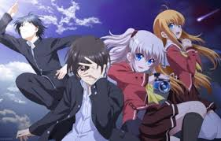
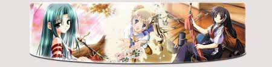

Происходит постепено сначало надознать пропорции
и понимать как устроено тело.Подобрать рефлекс,
определите основные линии,котурые задают динамику позе.
Когда заканчивают с основой тела.Нужно приступить к
проресовке деталей.Даже если вы не планируете показывать
определеные детали мышц,все равно влияет на внешний вид.

Для начала надо выбрать дату рождения.Для определение
индивидуальностей можно использовать как Заподное так и
Восточный зодиак.выможете использовать это для определение
возраста персонажей.Также важно,чтобы личные качества вашего
героя были сбалонсироваными. Для создания убедительного,
правдоподобного образа нужен баланс положительных и
отрицательных качеств.

Чтобы оживить действие используйте панорамнуй съемку.это
когда камера движется снимая все вокруг или от одного
персонажа к другому, или просто камера меняет фоы,или камера
показывает на кокойта предмет рядом.Приэтом все фоны и персонажи
статичны- без анимации.Главное не переусердствовать с частотой
смены камеры.
